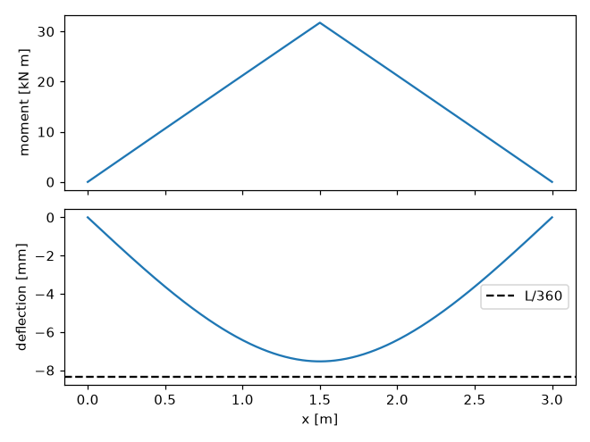
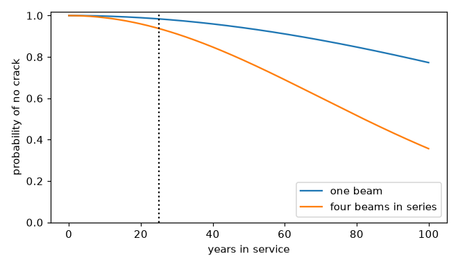

A beam from load to fatigue life#
A beam that is strong enough and stiff enough can still crack. This
tutorial designs one beam through three domains: the load, moment and
deflection come from engineeringkit.structural_engineering, the
stress cycles are turned into a fatigue life with
engineeringkit.materials, and the scatter in that life becomes a
probability of failure with engineeringkit.reliability.
The beam is a simply supported aluminium runway beam, 3 m long, under a hoist that lifts at midspan. Its section is a solid 30 mm by 260 mm rectangle. The material values are representative of a 2024 aluminium alloy, not a design standard.
1. Loads, moments and deflections#
The beam carries three loads: its own weight, spread along it, the hoist trolley (2 kN), which is always there, and the lifted load, which comes and goes. Euler-Bernoulli beams are linear, so the three can be solved separately and added. The heaviest lift is 40 kN.
import matplotlib.pyplot as plt
import numpy as np
from engineeringkit import materials, reliability
from engineeringkit import structural_engineering as se
L, b, h = 3.0, 0.030, 0.260 # span and section [m]
E, rho, g = 72e9, 2780.0, 9.81 # aluminium [Pa], [kg/m^3]
I = se.rectangular_second_moment(b, h)
Z = se.rectangular_section_modulus(b, h)
beam = se.SimplySupportedBeam(L, E, I)
own_weight = beam.solve_uniform_load(rho * b * h * g)
trolley = beam.solve_point_load(2e3)
lift = beam.solve_point_load(40e3)
M_dead = own_weight.moment + trolley.moment
M_full = M_dead + lift.moment
deflection = own_weight.deflection + trolley.deflection + lift.deflection
print(f"I = {I:.3e} m^4, Z = {Z:.3e} m^3")
print(f"midspan moment: {M_dead.max() / 1e3:.2f} kN m unloaded, {M_full.max() / 1e3:.2f} kN m at 40 kN")
print(f"bending stress at 40 kN: {se.bending_stress(M_full.max(), h / 2, I) / 1e6:.1f} MPa")
print(f"deflection {1e3 * abs(deflection).max():.2f} mm, limit L/360 = {1e3 * L / 360:.2f} mm")
# I = 4.394e-05 m^4, Z = 3.380e-04 m^3
# midspan moment: 1.74 kN m unloaded, 31.74 kN m at 40 kN
# bending stress at 40 kN: 93.9 MPa
# deflection 7.54 mm, limit L/360 = 8.33 mm
fig, axes = plt.subplots(2, 1, sharex=True, figsize=(6, 4.5))
axes[0].plot(beam.solve_point_load(1).x, M_full / 1e3)
axes[0].set_ylabel("moment [kN m]")
axes[1].plot(beam.solve_point_load(1).x, 1e3 * deflection)
axes[1].axhline(-1e3 * L / 360, color="k", ls="--", label="L/360")
axes[1].set(xlabel="x [m]", ylabel="deflection [mm]")
axes[1].legend()
fig.tight_layout()

The stress, about 94 MPa, is under a third of the alloy’s yield strength, and the deflection is just inside a common serviceability limit of span/360. For aluminium, whose modulus is a third of steel’s, stiffness usually sizes the beam. By the static checks the design is done.
2. From a load history to stress cycles#
The beam is loaded and unloaded with every lift. At the bottom of the section, under the hoist, the hoist bracket is bolted through the beam, and the hole raises the local stress by a fatigue notch factor of about 3. A year of use is 100,000 lifts, in three sizes:
Kf, Sut = 3.0, 470e6 # notch factor, tensile strength [Pa]
loads = np.array([40e3, 25e3, 10e3]) # lifted load [N]
lifts_per_year = 100_000 * np.array([0.1, 0.3, 0.6])
s_min = Kf * M_dead.max() / Z
s_max = Kf * (M_dead.max() + loads * L / 4) / Z
s_a, s_m = (s_max - s_min) / 2, (s_max + s_min) / 2
for P, sa, sm in zip(loads, s_a, s_m):
print(f"{P / 1e3:4.0f} kN lift: amplitude {sa / 1e6:5.1f} MPa about a mean of {sm / 1e6:5.1f} MPa")
# 40 kN lift: amplitude 133.1 MPa about a mean of 148.6 MPa
# 25 kN lift: amplitude 83.2 MPa about a mean of 98.6 MPa
# 10 kN lift: amplitude 33.3 MPa about a mean of 48.7 MPa
None of the cycles is fully reversed: the beam only bends one way, so each cycle has a tensile mean. Goodman’s line accounts for it. A cycle of amplitude \(\sigma_a\) about a mean \(\sigma_m\) is as damaging as a fully reversed cycle of amplitude \(\sigma_{ar} = \sigma_a / (1 - \sigma_m/S_{ut})\), which is the fatigue strength at which the Goodman safety factor equals one:
s_ar = s_a / (1 - s_m / Sut)
assert np.isclose(materials.goodman_safety_factor(s_a[0], s_m[0], s_ar[0], Sut), 1.0)
print("equivalent fully reversed amplitudes [MPa]:", np.round(s_ar / 1e6, 1))
# equivalent fully reversed amplitudes [MPa]: [194.7 105.3 37.1]
3. Life from Basquin and Miner#
Aluminium has no endurance limit: every cycle does some damage, however small. Basquin’s law gives the number of cycles to failure at each amplitude, and Palmgren and Miner’s rule adds up the fraction of life each block of cycles uses:
sigma_f, b_exp = 900e6, -0.102 # Basquin coefficient [Pa] and exponent
N = materials.basquin_cycles(s_ar, sigma_f, b_exp)
damage = materials.miner_damage(lifts_per_year, N)
for P, n, d in zip(loads, N, lifts_per_year / N / damage):
print(f"{P / 1e3:4.0f} kN: {n:9.3e} cycles to failure, {100 * d:5.1f}% of the yearly damage")
# 40 kN: 1.652e+06 cycles to failure, 99.3% of the yearly damage
# 25 kN: 6.821e+08 cycles to failure, 0.7% of the yearly damage
# 10 kN: 1.872e+13 cycles to failure, 0.0% of the yearly damage
print(f"damage per year {damage:.2e}, so a predicted life of {1 / damage:.0f} years")
# damage per year 6.10e-03, so a predicted life of 164 years
The heavy lifts are a tenth of the traffic but do almost all the damage. Basquin’s exponent is the reason: the life varies as the stress to the power \(1/b \approx -10\), so the 40 kN lift is about 400 times more damaging than the 25 kN one, though it is only 60% heavier.
4. From a life to a probability of failure#
A predicted life of 164 years sounds safe, but it is a median: fatigue lives of nominally identical parts scatter by a factor of ten or more. Model the life of one beam as a Weibull distribution whose median is Miner’s prediction, with shape \(\beta = 2\) (an assumption; fatigue data are often fitted with \(\beta\) between 2 and 4). The runway has four such beams, and it is out of service if any one of them cracks: a series system.
beta = 2.0
eta = (1 / damage) / np.log(2) ** (1 / beta) # Weibull scale whose median is Miner's life
design_life = 25.0 # years
R_beam = float(reliability.weibull_reliability(design_life, eta, beta))
R_runway = reliability.series_reliability(*[R_beam] * 4)
print(f"one beam survives {design_life:.0f} years with probability {R_beam:.4f}")
print(f"all four beams survive with probability {R_runway:.4f}")
# one beam survives 25 years with probability 0.9840
# all four beams survive with probability 0.9376
years = np.linspace(0, 100, 201)
fig, ax = plt.subplots(figsize=(6, 3.5))
ax.plot(years, reliability.weibull_reliability(years, eta, beta), label="one beam")
ax.plot(years, reliability.weibull_reliability(years, eta, beta) ** 4, label="four beams in series")
ax.axvline(design_life, color="k", ls=":")
ax.set(xlabel="years in service", ylabel="probability of no crack", ylim=(0, 1.02))
ax.legend()
fig.tight_layout()

A beam with a median life of more than 150 years gives the runway about a 6% chance of a fatigue crack within 25 years.
5. Designing to a reliability target#
Suppose the owner wants a 99% chance that the runway reaches 25 years without a crack. The section depth is the obvious lever: the moment of inertia grows as \(h^3\) and the bending stress falls as \(1/h^2\). The whole chain, from section to runway reliability, fits in one function:
def runway_reliability(depth, years=design_life):
Z_d = se.rectangular_section_modulus(b, depth)
M0 = rho * b * depth * g * L**2 / 8 + 2e3 * L / 4
lo, hi = Kf * M0 / Z_d, Kf * (M0 + loads * L / 4) / Z_d
amplitude, mean = (hi - lo) / 2, (hi + lo) / 2
cycles = materials.basquin_cycles(amplitude / (1 - mean / Sut), sigma_f, b_exp)
life = 1 / materials.miner_damage(lifts_per_year, cycles)
return float(reliability.weibull_reliability(years, life / np.log(2) ** (1 / beta), beta)) ** 4
assert np.isclose(runway_reliability(h), R_runway)
for depth in (0.26, 0.27, 0.28, 0.29):
print(f"h = {1e3 * depth:.0f} mm: runway reliability over 25 years {runway_reliability(depth):.4f}")
# h = 260 mm: runway reliability over 25 years 0.9376
# h = 270 mm: runway reliability over 25 years 0.9923
# h = 280 mm: runway reliability over 25 years 0.9989
# h = 290 mm: runway reliability over 25 years 0.9998
The midspan moment uses \(wL^2/8 + PL/4\), the closed forms of the
beam solutions above; the assert checks the shortcut against them.
A 270 mm beam, 4% deeper, meets the target. That is
the lesson of the chain: the static checks set a minimum section, but the
load spectrum, the notch, the steep S-N curve and the scatter of fatigue
lives decide the one that is built.
See also: the structural_engineering, materials and reliability galleries, and the Materials exercises exercises.